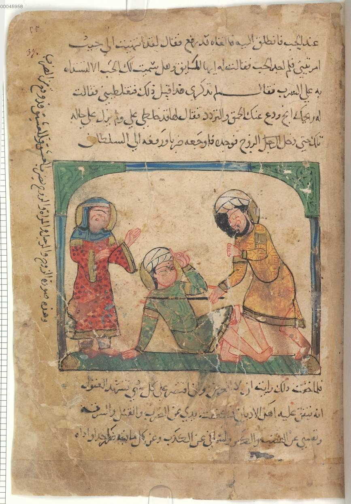
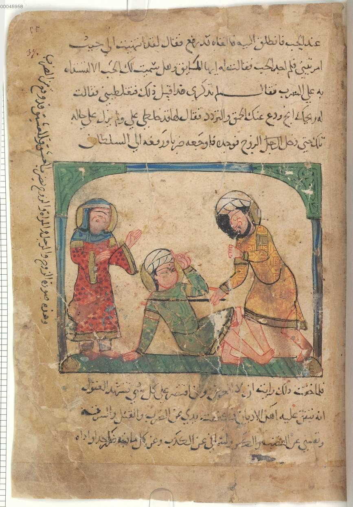

Kalila and Dimna
Thou Shalt Not Covet Another Man's Wife
Bavarian State Library, Munich
Illustrations 17 & 18
Shauna Tangerman
November 9, 2016
A Multimedia Project for
ARTH 370 - Art & Literature of the Islamic World
Dr. Hussein Keshani
Art History & Visual Culture | UBC Okanagan campus
 
